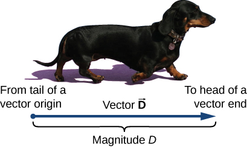

🧭 Week 2 — Vectors, Components & 2D Motion¶
(Fully Illustrated, Tiered Mastery Edition)¶
In Week 2, we move beyond motion in a straight line and learn how to describe motion in two dimensions using vectors.
This module is built from:
- Your extracted images from Chapter 2 & 4
- OpenStax concepts (rewritten, expanded, and illustrated)
- Tiered mastery structure for deep understanding
- Clean, collapsible sections
- Perfectly formatted MathJax equations
📘 1. What is a Vector?¶
1.1 Vector Definition (Core → Deeper → Advanced)
A vector has: - magnitude (how much) - direction (which way)
Examples of vectors:
- displacement
- velocity
- acceleration
- force
Your textbook illustration:

A scalar (like mass or temperature) answers “how much?”
A vector answers “how much AND in what direction?”
Because vectors have direction:
- signs matter
- angles matter
- graphs matter
This is why student errors often come from mixing scalars and vectors.
Another useful visual:

To work with vectors mathematically, we represent them in component form:
Or in unit vector form:
The magnitude is:
And the direction angle:
📘 2. Breaking a Vector into Components¶
2.1 Components (Core → Deeper → Advanced)
Any vector can be written as horizontal and vertical parts:
Must-know diagram:

Why do we use components?
- Because motion in the x direction and y direction are independent.
- Gravity acts vertically, not horizontally.
- Calculus works smoothly on one dimension at a time.
Students struggle until they memorize this truth:
“A 2D problem is really just two 1D problems happening at the same time.”
Example:
A \(12\ \text{m}\) vector at \(60^\circ\):
This is crucial for projectile motion.
📘 3. Vector Addition & Subtraction¶
3.1 Adding Vectors (Core → Deeper → Advanced)
For vectors: [ \vec{A} = \langle A_x, A_y\rangle,\quad \vec{B} = \langle B_x, B_y\rangle ]
Then:
Illustrated:

The “tip-to-tail” method is the geometric version of vector addition.
Vector subtraction simply flips direction:
Example:
📘 4. Dot Product (Scalar Product)¶
4.1 Dot Product (Core → Deeper → Advanced)
The dot product is:
Or:
Figure:

The dot product measures how aligned two vectors are.
- Positive → similar direction
- Zero → perpendicular
- Negative → opposite directions
This is the basis of work in physics.
Angle between vectors:
📘 5. Motion in Two Dimensions¶
5.1 Independence of Motion (Core → Deeper → Advanced)
Horizontal and vertical motions are independent except for time.
Gravity acts only in the vertical direction:
Textbook image:

Students must understand: - Horizontal motion is constant velocity. - Vertical motion is constant acceleration.
This makes projectile motion possible.
Use components of initial velocity:
Then:
📘 6. Projectile Motion¶
6.1 Full Projectile Model (Core → Deeper → Advanced)
Projectiles follow a parabolic path.
Image:

Horizontal motion: [ x(t)=v_{0x}t ]
Vertical motion: [ y(t)=v_{0y}t - \frac{1}{2}gt^2 ]
Why parabola?
Because: - Horizontal acceleration is zero - Vertical acceleration is constant - Combining them yields the parametric form of a parabola
Eliminate \(t\):
Flight time:
Range:
Maximum height:
📘 7. Relative Velocity¶
7.1 Relative Motion (Core → Deeper → Advanced)
Relative velocity:
Illustrated:

Relative motion answers: - “How fast is object A moving relative to object B?”
This is essential for:
- boats in rivers
- airplanes in wind
- cars on a highway
Example: A boat moves east at 5 m/s relative to the water.
The water moves north at 3 m/s relative to the ground.
📘 8. Worked Examples¶
Example 1 — Vector Components
A 10 m vector at \(30^\circ\):
[ A_x = 10\cos30^\circ = 8.66 ] [ A_y = 10\sin30^\circ = 5 ]
Example 2 — Projectile Motion
Ball launched at 20 m/s at \(40^\circ\):
[ v_{0x} = 20\cos40^\circ = 15.32 ] [ v_{0y} = 20\sin40^\circ = 12.86 ]
Illustrated:
Example 3 — Relative Velocity
Plane moves 80 m/s north.
Wind blows 30 m/s east.
📘 9. Practice Problems¶
Try these before revealing the answers
1. Find components of a 25 m vector at \(53^\circ\).
2. A projectile is launched at 15 m/s at \(30^\circ\). Find flight time.
3. A boat moves 4 m/s east in a 3 m/s north current. Find resultant magnitude.
4. If \(\vec{A}=\langle 2,3\rangle\) and \(\vec{B}=\langle -1,4\rangle\), compute \(\vec{A}+\vec{B}\).
5. A ball is thrown horizontally at 8 m/s from 12 m high. How far does it land?
Solutions
-
\[ A_x = 25\cos53^\circ \approx 15,\ A_y = 25\sin53^\circ \approx 20 \]
-
\[ T = \frac{2v_{0y}}{g} = \frac{2(15\sin30^\circ)}{9.8} = 1.53\ \text{s} \]
-
\[ |\vec{v}|=\sqrt{4^2+3^2}=5\ \text{m/s} \]
-
\[ \langle 2,3\rangle+\langle -1,4\rangle=\langle 1,7\rangle \]
-
Time: [ t = \sqrt{\frac{2h}{g}} = \sqrt{\frac{24}{9.8}} = 1.56\ \text{s} ] Distance: [ x = v t = 8(1.56)=12.5\ \text{m} ]